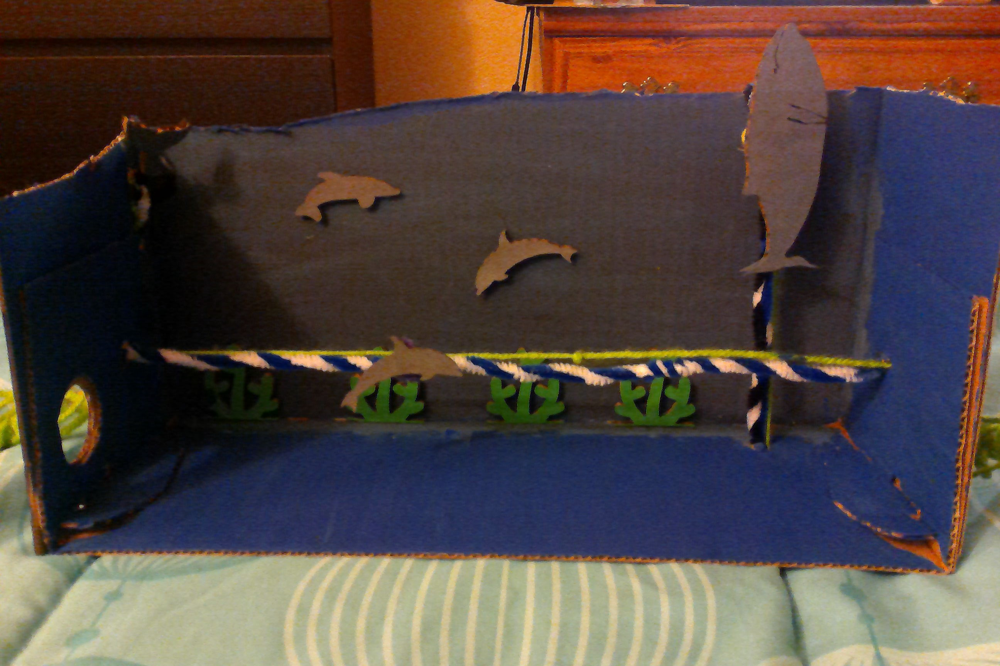
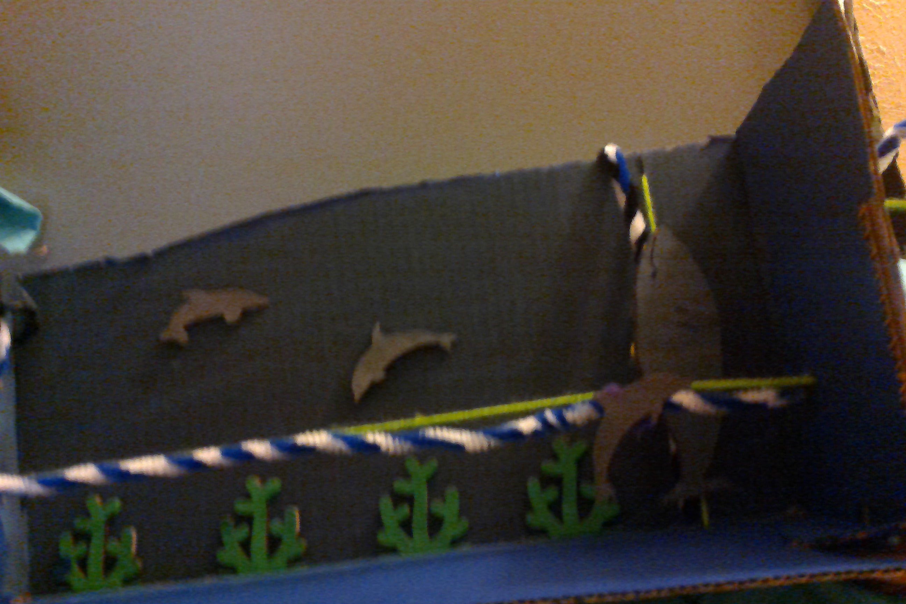
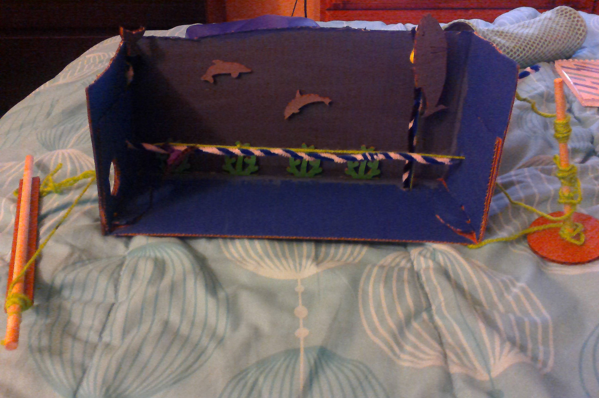
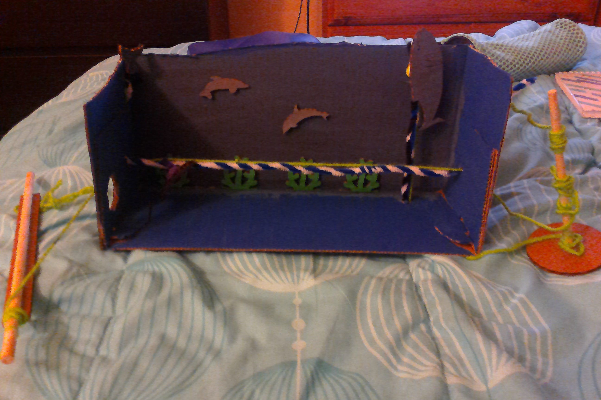

Design Challenge 7: Cardboard Automata
Design and fabricate a laser cut cardboard automata that is:
Hand powered (no motors)
Upcycle: made of low cost materials
Addresses the theme of “under the sea”
   